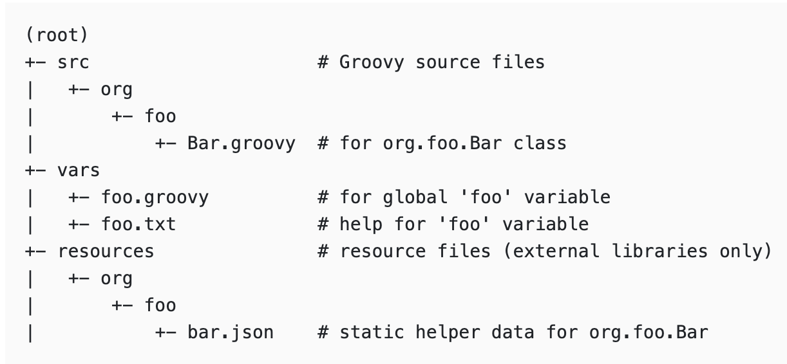
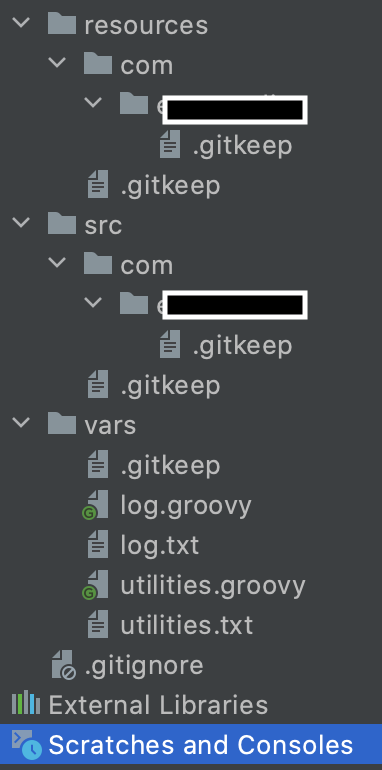
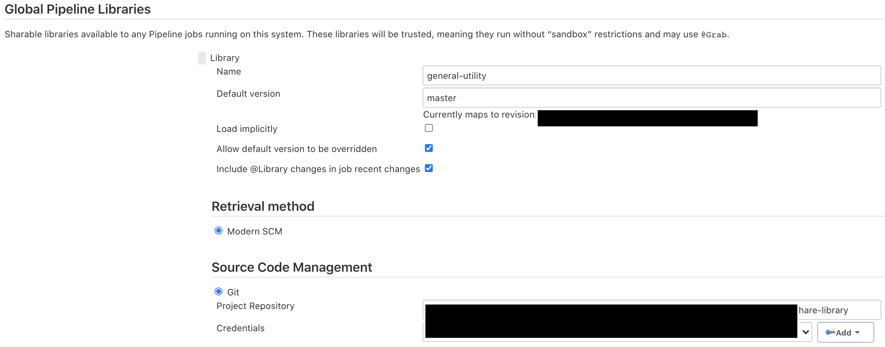
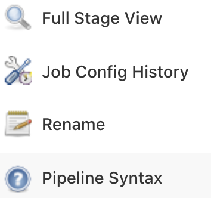
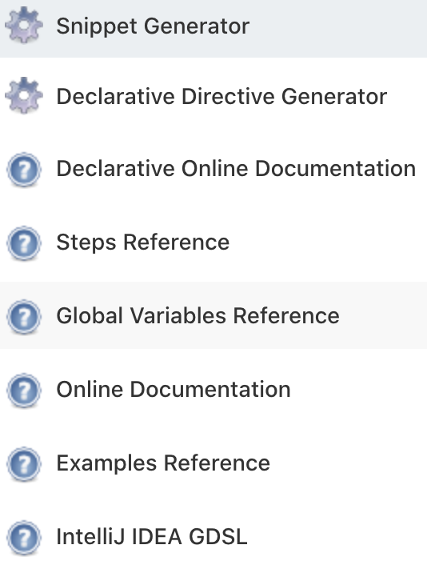
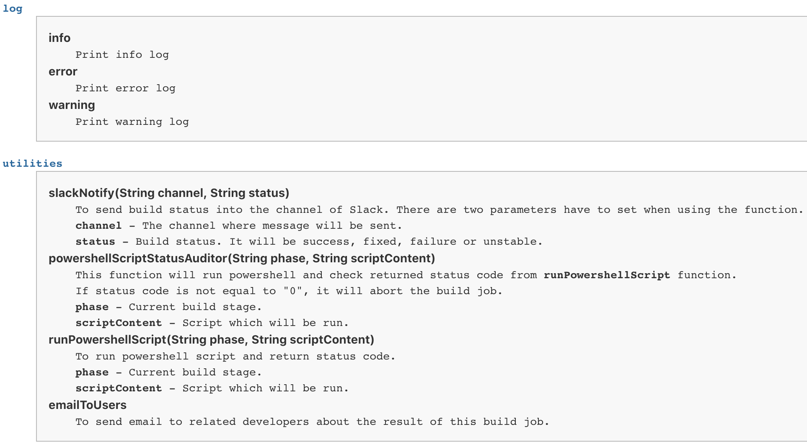

Create Share Library on Jenkins
前言
為了減少因為複制而造成重複的腳本，Jenkins 提供了 共享函式庫(Share Library)這個功能，讓 Pipeline 也可以使用模組化的方式來減少重複的程式碼。
根據官方文件，Share Library 的資料夾結構必需如下圖

src- 與 Java 的資料夾結構一樣。此資料夾會在 Pipeline 執行時被加入到classpathvars- 裡面的檔案會是以一個.groovy及一個.txt成對的存在著，例如: utilities.groovy 與 utilities.txt。.groovy會像一個對外開放的命名空間。亦即所有在這個命名空間裡的函式都可以在 Pipeline引入這個共享函式後利用這個命名空間直接存取。.txt的內容則會針對.groovy裡即有的函式加以說明，就像JavaDoc一樣。只是…，官網上面說它支援html或是markdown的語法，但是，我在使用markdown的時候一直無法正常顯示，後來就改用html的語法了。resources- 裡面的資料也是全域的，但必需透過內建的的step-libraryResource才可以存取。
Jenkins Share Library 的基本說明大概是這樣。接下來就開始建立吧!
建立 Jenkins Share Library
Share Library 會是一個獨立的 Git Repo，並且會在設定 Jenkins 時被引入。請根據各自使用的 VCS 建立之。
這裡我覺得常用的功能有發送訊息之類的腳本。我們先建立一個發送 Slack Notification 的功能

這裡產生了資料夾結構並且建立了兩個命名空間utilities及log，又及各自說明文件。在utilities裡面，
我們建立了一個發送 Slack 訊息的函式。
/**
* Slack Notifier
*
* To send build status into the channel of Slack
*
* @params channel - The channel where message will be sent
* status - Build status. It will be success, fixed, failure or unstable
*/
def slackNotify(String channel, String status) {
def colorCode = null
switch(status) {
case 'success':
case 'fixed':
colorCode = '#00FF00';
break;
case 'failure':
colorCode = '#FF0000';
break;
case 'unstable':
colorCode = '#FFCC00';
break;
default:
colorCode = '#440f3c';
break;
}
slackSend channel: "$channel",
color: "$colorCode",
message: "*${status.toUpperCase()}* - ${env.JOB_NAME} #${env.BUILD_NUMBER} (<${env.BUILD_URL}console|Open>)"
}
建立說文件
接下來，繼續進行說明文件的建立來讓我們的 Share Library 更完整吧!因為markdown的方式我目前還沒研究成功，所以這次是先使用html的語法。
<b>slackNotify(String channel, String status)</b>
<pre>
To send build status into the channel of Slack. There are two parameters have to set when using the function.
<b>channel</b> - The channel where message will be sent.
<b>status</b> - Build status. It will be success, fixed, failure or unstable.
</pre>
這樣就把說明文件完成了，接下來只要讓 Jenkins 把剛剛建立的 Share Library 引入就完成了九成了。
設定 Jenkins
進入System Configuration後並且點擊Configure system，下拉至Global Pipeline Libraries，
點擊建立並且填入相關資訊，如:Name、Default version、Project Repository及Credentials。

Note: 此設定是針對Git，如果讀者是使用Subversion也可將設定改成Subversion即可。
引入 Share Library
在 Pipeline 引入vars/的函式語法有四種
/* Basic */
@Library('my-shared-library') _
/* Using a version specifier, such as branch, tag, etc */
@Library('my-shared-library@1.0') _
/* Accessing multiple libraries with one statement */
@Library(['my-shared-library', 'otherlib@abc1234']) _
/* Dynamically */
library 'my-shared-library' // 這是以 step 的方式呼叫
要引入src/的類別則需要使用import語法。(雖然這個方法也可以用來引入vars/底下的函式，
但為了程式碼的簡潔，官方並不建議這樣做)
@Library('somelib')
import com.mycorp.pipeline.somelib.UsefulClass
最後，建立一個 Job 來測試。引入我們剛剛建立的 Share Library 並且在stage裡面呼叫。
@Library('general-utility') _
pipeline {
stages {
stage('Test') {
steps {
script {
utilities.slackNotifier()
}
}
}
}
}
相信各位一定都成功了!這裡就不放圖了XD。
剛剛說過的完整性包括了說明文件，那…，我們剛寫了一堆html的說明文件呢?這部份必需先執行過一次 Build Job 後才會看得到。
它會存在於Global Variable Reference。
點擊Pipeline Syntax

再點擊Global Variable Reference

可以看到剛剛建立的說明就在這裡，看起來就很專業的樣子XD

總結
對於正在學習 Jenkins 的朋友們，我個人覺得這個技能是必點的，因為模組化能夠讓你的腳本更精簡且更具有可攜性及可讀性。 Junior(Pay少) 跟 Senior(Pay多) 的差距也常常從這些細節去區分出來的。舉個例吧，假設你有十個函式或是描述是很常在腳本裡出現的，而且又有十個 Job 是被複制出來的，就相當於有將近100個多餘的函式在你的 Pipeline 裡了。